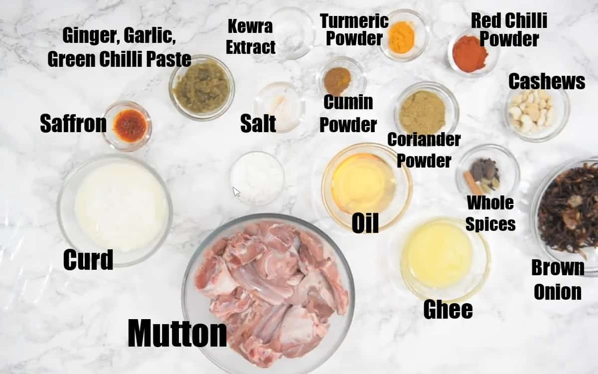
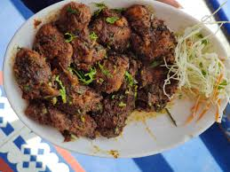

Golichina Mamsam

Ingredients:
ul>
- Mutton - 500 grams (cut into pieces)
- Onions - 2 large (finely chopped)
- Tomatoes - 2 medium (finely chopped)
- Ginger-garlic paste - 2 tablespoons
- Green chilies - 4 to 5 (slit)
- Red chili powder - 2 teaspoons
- Coriander powder - 1 tablespoon
- Turmeric powder - 1/2 teaspoon
- Cumin seeds - 1 teaspoon
- Cinnamon stick - 1 inch
- Cloves - 4 to 5
- Bay leaf - 1
- Salt - to taste
- Oil - 3 tablespoons
- Coriander leaves - for garnishing
- Water - as required

Recipe:
- Heat oil in a pressure cooker or a heavy-bottomed pan.
- Add cumin seeds, cinnamon stick, cloves, and bay leaf. Sauté for a few seconds until fragrant.
- Add finely chopped onions and green chilies. Sauté until the onions turn golden brown.
- Add ginger-garlic paste and sauté until the raw smell disappears.
- Add chopped tomatoes and cook until they turn soft and mushy.
- Add red chili powder, coriander powder, turmeric powder, and salt. Mix well and cook for a minute.
- Add the mutton pieces and mix well to coat them with the masala.
- Cover and cook for 5 minutes, stirring occasionally.
- Add water as required to cover the mutton pieces.
- Cover the pressure cooker with its lid and cook for about 4-5 whistles or until the mutton is tender.
- Once the pressure releases naturally, open the cooker and check the consistency of the gravy.
- If the gravy is too thin, simmer until it reaches the desired consistency.
- Garnish with chopped coriander leaves.
- Golichina Mamsam is ready to serve. Enjoy it with rice or roti!